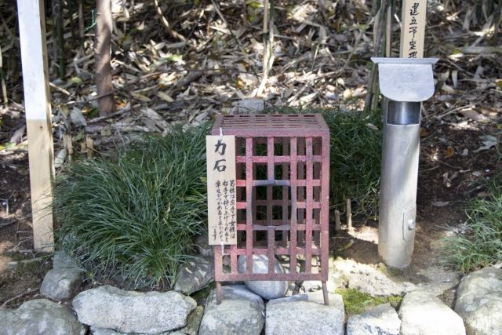
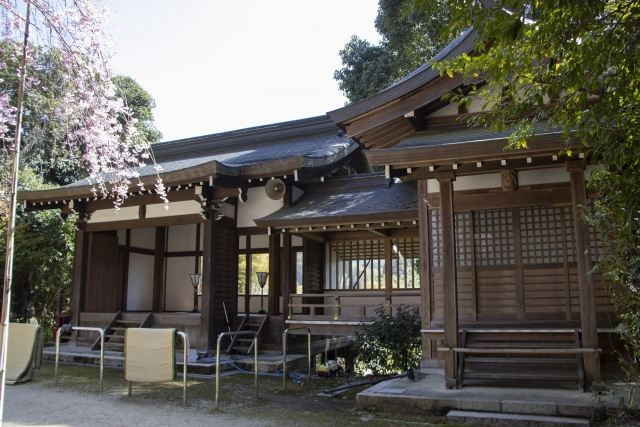

境内に点在する陰陽石
境内には多くの陰陽石が祀られており、子授けや縁結びの信仰と結びつく特徴的な見どころです。

飛鳥坐神社は、飛鳥地方に古くから鎮座する歴史ある神社です。 飛鳥の土地を守る神として信仰され、境内には大小の陰陽石が数多く祀られています。 子授け・安産・縁結びの神社としても知られ、毎年2月に行われる「おんだ祭」は飛鳥を代表する伝統行事です。
| 営業時間 | 境内自由 |
|---|---|
| 定休日 | なし |
| 料金 | 無料 |
| 所要時間 | 20分 |
| 駐車場 |
飛鳥坐神社駐車場
（無料）
飛鳥寺前有料駐車場 （徒歩3分・普通車500円） |
| アクセス | 近鉄飛鳥駅から徒歩30分。 |
| 地図 | 地図はこちら |

境内には多くの陰陽石が祀られており、子授けや縁結びの信仰と結びつく特徴的な見どころです。

毎年2月に行われる農耕神事で、飛鳥地方を代表する伝統行事として知られています。
飛鳥坐神社は、古代から飛鳥の地で信仰されてきた神社です。 祭神として八重事代主神などを祀り、飛鳥の土地と人々を守る神として大切にされてきました。 現在も地域の人々から篤く信仰され、多くの参拝者が訪れています。